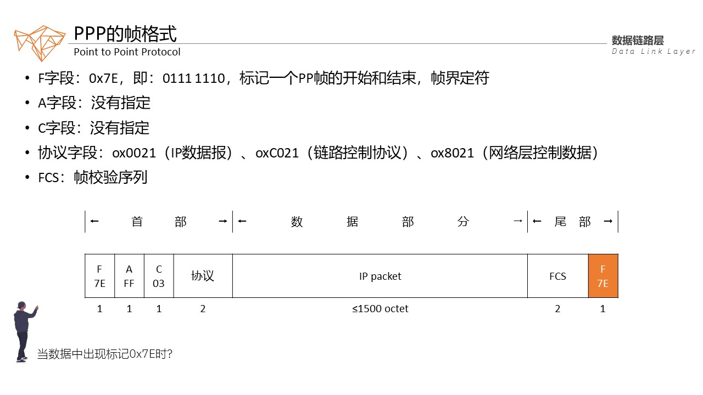
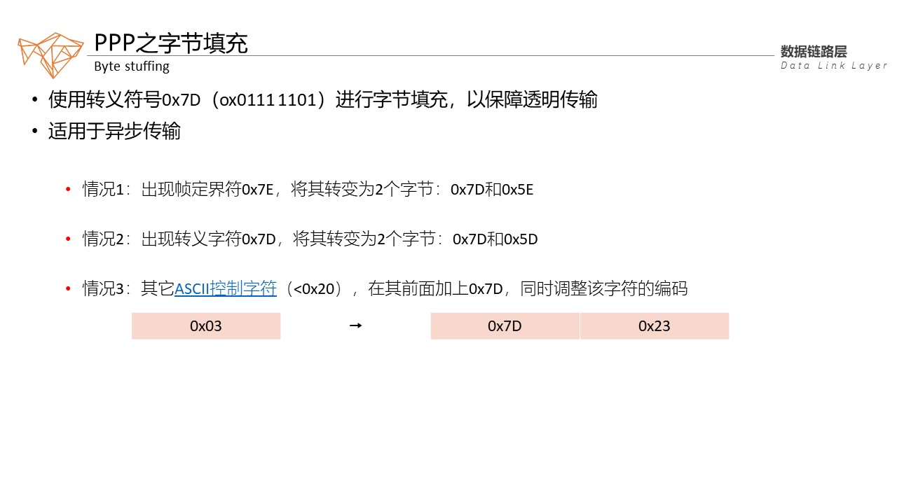
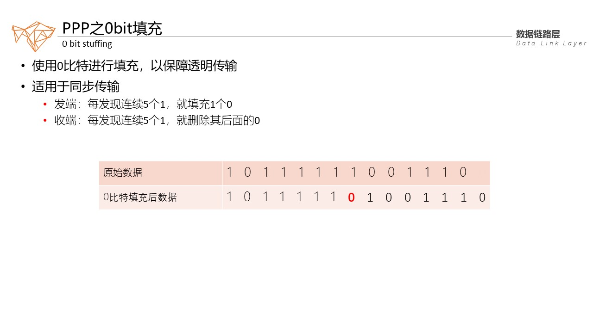

- PPP协议特点
- 简单
不需要纠错：由传输层实现
不需要流量控制：由传输层实现
不需要帧序号
仅支持点对点链路，不支持点到多点链路
仅支持全双工链路，不支持单工和半双工链路
- 封装成帧
- 透明
- 差错检测
检错==纠错？
- 其它
多种网络协议
多种类型链路
检测连接状态
最大传输单元
网络地址协商
数据压缩协商
- 多应用于广域网
- PPP协议组成要素
- 封帧
- 链路控制协议LCP
- 网络控制协议NCP



- Overview
- The Point-to-Point Protocol is designed for simple links which transport packets between two peers. These
links provide full-duplex simultaneous bi-directional operation, and are assumed to deliver packets in order. It
is intended that PPP provide a common solution for easy connection of a wide variety of hosts, bridges and
routers.
- Encapsulation
- The PPP encapsulation provides for multiplexing of different network-layer protocols simultaneously over the
same link. The PPP encapsulation has been carefully designed to retain compatibility with most commonly used
supporting hardware.
- Only 8 additional octets are necessary to form the encapsulation when used within the default HDLC-like
framing.
In environments where bandwidth is at a premium, the encapsulation and framing may be shortened to 2 or 4
octets.
- To support high speed implementations, the default encapsulation uses only simple fields, only one of which
needs to be examined for demultiplexing. The default header and information fields fall on 32-bit boundaries,
and the trailer may be padded to an arbitrary boundary.
- LCP-link control protocol
- The LCP is used to automatically agree upon the encapsulation format options, handle varying limits on sizes
of
packets, detect a looped-back link and other common misconfiguration errors, and terminate the link. Other
optional facilities provided are authentication of the identity of its peer on the link, and determination when
a link is functioning properly and when it is failing.
- NCP-network control protocol
- Point-to-Point links tend to exacerbate many problems with the current family of network protocols. For
instance, assignment and management of IP addresses , which is a problem even in LAN environments, is especially
difficult over circuit-switched point-to-point links (such as dial-up modem servers). These problems are handled
by a family of Network Control Protocols (NCPs), which each manage the specific needs required by their
respective network-layer protocols. These NCPs are defined in companion documents.
- Protocol field
- The Protocol field is one or two octets, and its value identifies the datagram encapsulated in the Information
field of the packet. All Protocols MUST be odd; Also, all Protocols MUST be assigned such that the least
significant bit (LSB) of the most significant octet equals "0". Frames received which don't comply with these
rules MUST be treated as having an unrecognized Protocol.
- values in the "0***" to "3***" range identify the network-layer protocol of specific packets
- values in the "8***" to "b***" range identify packets belonging to the associated Network Control Protocols
(NCPs), if any.
- values in the "4***" to "7***" range are used for protocols with low volume traffic which have no associated
NCP.
- values in the "c***" to "f***" range identify packets as link-layer Control Protocols (such as LCP).
- Information Field
- The Information field is zero or more octets. The Information field contains the datagram for the protocol
specified in the Protocol field.
- The maximum length for the Information field, including Padding, but not including the Protocol field, is
termed
the Maximum Receive Unit (MRU), which defaults to 1500 octets. By negotiation, consenting PPP implementations
may
use other values for the MRU.
- Padding
- On transmission, the Information field MAY be padded with an arbitrary number of octets up to the MRU. It is
the
responsibility of each protocol to distinguish padding octets from real information.